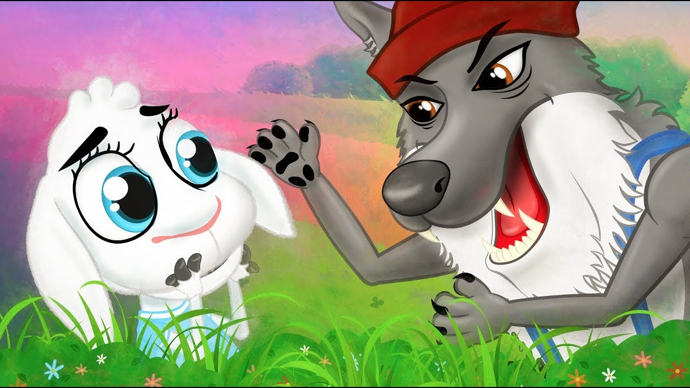
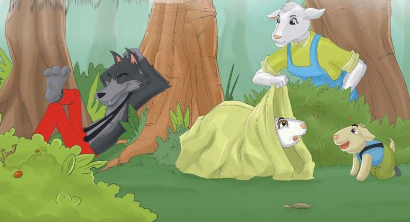

Había una vez una cabra que tenía siete cabritos, a los que quería tanto como cualquier madre puede querer a sus hijos. Un día necesitaba ir al bosque a buscar comida, de modo que llamó a sus siete cabritillos y les dijo:
-Queridos hijos, voy a ir al bosque; tened cuidado con el lobo, porque si entrara en casa os comería a todos y no dejaría de vosotros ni un pellejito. A veces el malvado se disfraza, pero podréis reconocerlo por su voz ronca y por sus negras pezuñas.
Los cabritos dijeron:
-Querida mamá, puedes irte tranquila, que nosotros sabremos cuidarnos.
Entonces la madre se despidió con un par de balidos y, tranquilizada, emprendió el camino hacia el bosque.
No había pasado mucho tiempo, cuando alguien llamó a la puerta, diciendo:
-Abrid, queridos hijos, que ha llegado vuestra madre y ha traído comida para todos vosotros.
Pero los cabritillos, al oír una voz tan ronca, se dieron cuenta de que era el lobo y exclamaron:
-No abriremos, tú no eres nuestra madre; ella tiene la voz dulce y agradable y la tuya es ronca. Tú eres el lobo.
Entonces el lobo fue en busca de un buhonero y le compró un gran trozo de tiza. Se lo comió y así logró suavizar la voz. Luego volvió otra vez a la casa de los cabritos y llamó a la puerta, diciendo:
-Abrid, hijos queridos, que vuestra madre ha llegado y ha traído comida para todos vosotros.
Pero el lobo había apoyado una de sus negras pezuñas en la ventana, por lo cual los pequeños pudieron darse cuenta de que no era su madre y exclamaron:
-No abriremos; nuestra madre no tiene la pezuña tan negra como tú. Tú eres el lobo.
Entonces el lobo fue a buscar a un panadero y le dijo:
-Me he dado un golpe en la pezuña; úntamela con un poco de masa.
Y cuando el panadero le hubo extendido la masa por la pezuña, se fue corriendo a buscar al molinero y le dijo:
-Échame harina en la pezuña.
El molinero pensó: «Seguro que el lobo quiere engañar a alguien», y se negó a hacer lo que le pedía; pero el lobo dijo:
-Si no lo haces, te devoraré.

Entonces el molinero se asustó y le puso la pezuña, y toda la pata, blanca de harina. Sí, así son las personas.
Por tercera vez fue el malvado lobo hasta la casa de los cabritos, llamó a la puerta y dijo:
-Abridme, hijitos, que vuestra querida mamá ha vuelto y ha traído del bosque comida para todos vosotros.
Los cabritillos exclamaron:
-Primero enséñanos la pezuña, para asegurarnos de que eres nuestra madre.
Entonces el lobo enseñó su pezuña por la ventana y, cuando los cabritos vieron que era blanca, creyeron que lo que había dicho era cierto, y abrieron la puerta. Pero quien entró por ella fue el lobo. Los cabritos se asustaron y corrieron a esconderse. El mayor se metió debajo de la mesa; el segundo, en la cama; el tercero se escondió en la estufa; el cuarto, en la cocina; el quinto, en el armario; el sexto, bajo el fregadero, y el séptimo se metió en la caja del reloj de pared. Pero el lobo los fue encontrando y no se anduvo con miramientos. Iba devorándolos uno detrás de otro. Pero el pequeño, el que estaba en la caja del reloj, afortunadamente consiguió escapar. Una vez que el lobo hubo saciado su apetito, se alejó muy despacio hasta un prado verde, se tendió debajo de un árbol y se quedó dormido.
Muy poco después volvió del bosque la vieja cabra. Pero ¡ay!, ¡qué escena tan dramática apareció ante sus ojos! La puerta de la casa estaba abierta de par en par; la mesa, las sillas y los bancos, tirados por el suelo; las mantas y la almohada, arrojadas de la cama, y el fregadero hecho pedazos. Buscó a sus hijos, pero no pudo encontrarlos por ninguna parte. Los llamó a todos por sus nombres, pero nadie respondió. Hasta que, al acercarse donde estaba el más pequeño, pudo oir su melodiosa voz:
Mamaíta, estoy metido en la caja del reloj.
La madre lo sacó de allí, y el pequeño cabrito le contó lo que había sucedido, diciéndole que había visto todo desde su escondite y que, de milagro, no fue encontrado por el lobo. La mamá cabra lloró desconsoladamente por sus pobres hijos.
Luego, muy angustiada, salió de la casa seguida por su hijito. Cuando llegó al prado, encontró al lobo tumbado junto al árbol, roncando tan fuerte que hasta las ramas se estremecían. Lo miró atentamente, de pies a cabeza, y vio que en su abultado vientre, algo se movía y pateaba.

«¡Oh Dios mío! -pensó-, ¿será posible que mis hijos vivan todavía, después de habérselos tragado en la cena?» Entonces mandó al cabrito que fuera a la casa a buscar unas tijeras, aguja e hilo. Luego ella abrió la barriga al monstruo y, nada más dar el primer corte, el primer cabrito asomó la cabeza por la abertura y, a medida que seguía cortando, fueron saliendo dando brincos los seis cabritillos, que estaban vivos y no habían sufrido ningún daño, pues el monstruo, en su excesiva voracidad, se los había tragado enteros. ¡Aquello sí que fue alegría! Los cabritos se abrazaron a su madre y saltaron y brincaron como un sastre celebrando sus bodas. Pero la vieja cabra dijo:
-Ahora id a buscar unos buenos pedruscos. Con ellos llenaremos la barriga de este maldito animal mientras está dormido.
Los siete cabritos trajeron a toda prisa las piedras que pudieron y se las metieron en la barriga al lobo. Luego la mamá cabra cosió el agujero con hilo y aguja, y lo hizo tan bien que el lobo no se dio cuenta de nada, y ni siquiera se movió.
Cuando el lobo se despertó, se levantó y se dispuso a caminar, pero, como las piedras que tenía en la barriga le daban mucha sed, se dirigió hacia un pozo para beber agua. Cuando echó a andar y empezó a moverse, las piedras de su barriga chocaban unas contra otras haciendo mucho ruido. Entonces el lobo exclamó:
¿Qué es lo que en mi barriga bulle y rebulle? Seis cabritos creí haber comido, y en piedras se han convertido.
Al llegar al pozo se inclinó para beber, pero el peso de las piedras lo arrastraron al fondo, ahogándose como un miserable. Cuando los siete cabritos lo vieron, fueron hacia allá corriendo, mientras gritaban:
-¡El lobo ha muerto! ¡El lobo ha muerto!
Y, llenos de alegría, bailaron con su madre alrededor del pozo.